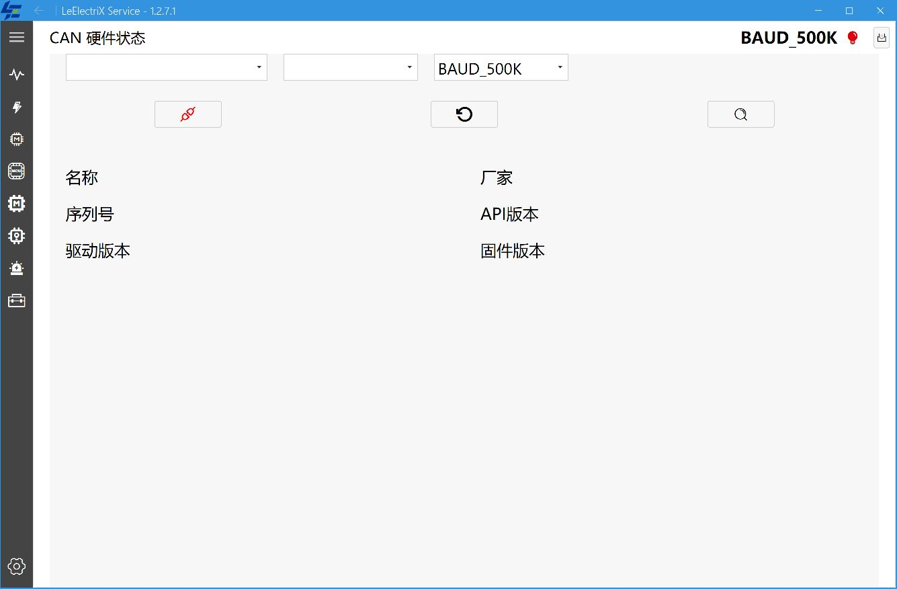
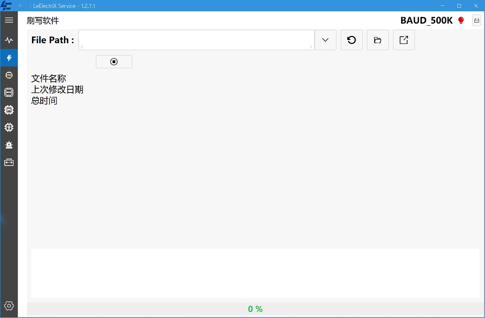
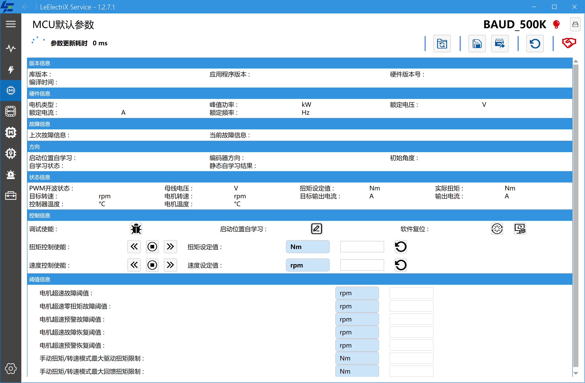
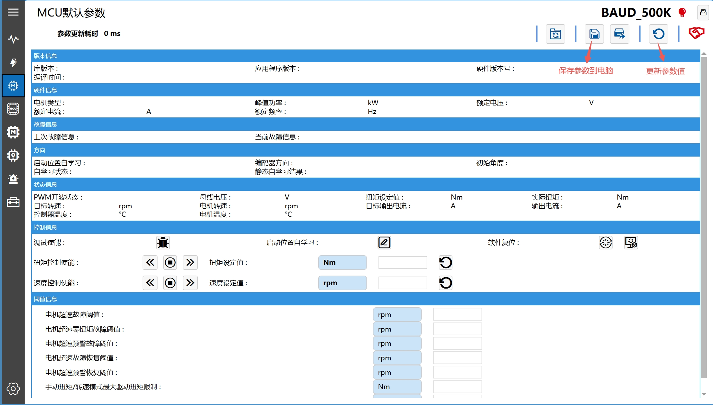
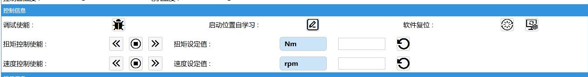
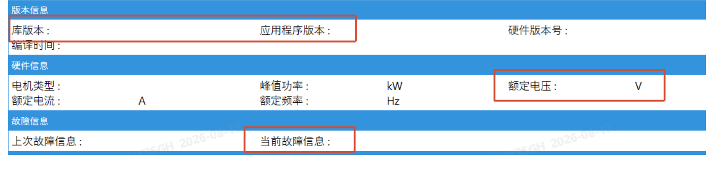
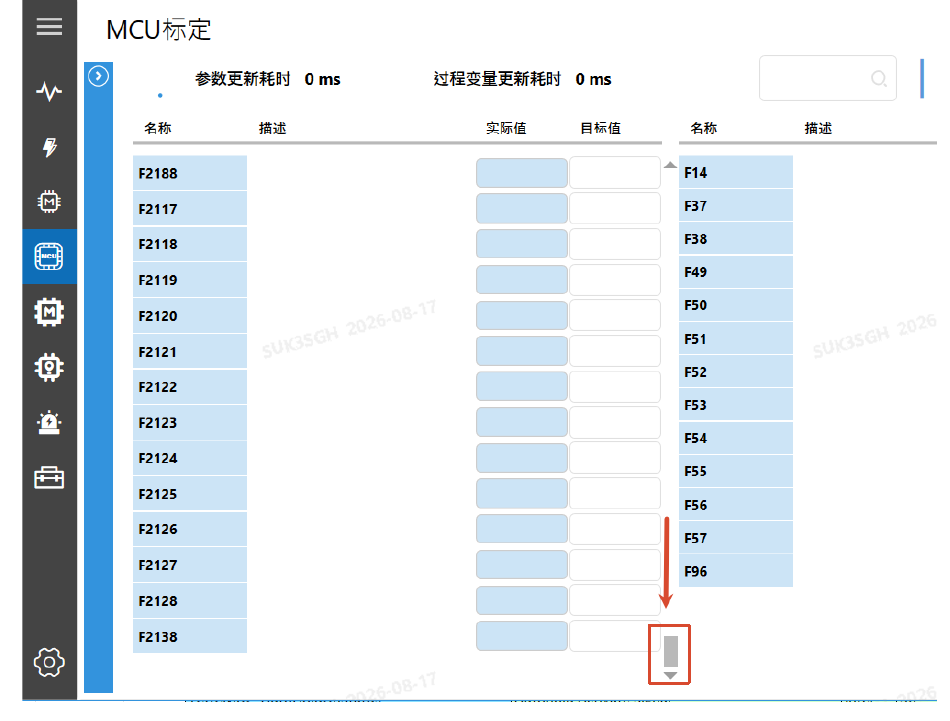
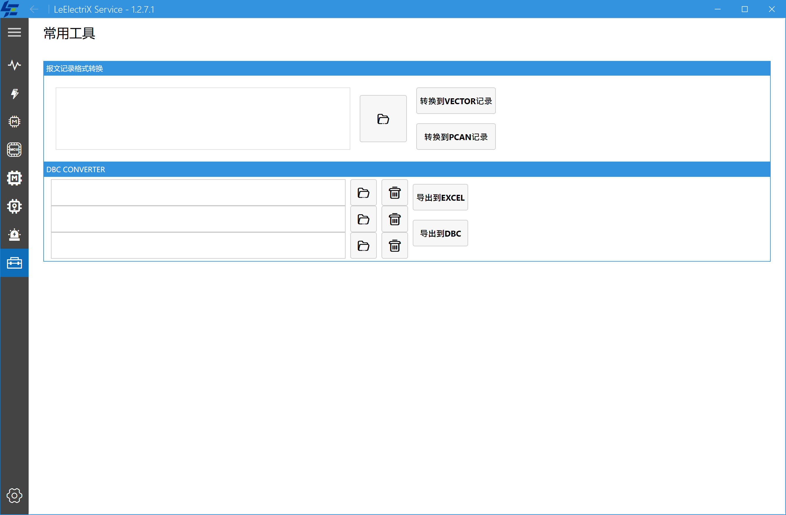

重要安全说明#
快速操作流程#
- 下载并安装 .NET 8 SDK x64 以及 CAN 适配器驱动。
- 安装并启动 LeElectriX FlashTool。
- 加载有效 License。
- 扫描 CAN 设备，选择通道和波特率并连接。
- 根据任务进入刷写、MCU 默认参数、MCU 标定、TRACE 或常用工具页面。
- 出现异常时记录发生时间，并从设置页打开日志目录收集日志。
1. 获取程序#
1.1 下载地址#
请通过以下入口获取当前最新版：
1.2 选择发布包#
| 发布包 | 适用场景 | 使用方式 |
|---|---|---|
LeElectriX_FlashTool-x64-<软件版本>.exe | 推荐，大多数客户电脑 | 运行安装程序并按向导完成安装 |
LeElectriX_FlashTool_V<软件版本>.zip | 便携使用或无法执行安装向导 | 完整解压后运行主程序，不要只复制单个 EXE |
说明： 实际文件名以最新版发布页为准。
预期结果： 下载的安装包来自最新版发布页，文件名中的软件版本号与发布页标签一致。
异常处理：
- 浏览器阻止下载时，请确认下载来源确实是上述发布仓库。
- 企业电脑无法运行安装包时，请联系本单位 IT 管理员。
- 不要从无法确认来源的网盘、邮件附件或第三方站点获取程序。
2. 环境依赖#
2.1 系统要求#
| 项目 | 要求 |
|---|---|
| 操作系统 | Windows 10 或 Windows 11 |
| 系统架构 | x64 |
| .NET 环境 | 为简化部署和排障，统一推荐安装 .NET 8 SDK x64 |
| CAN 驱动 | 与实际 CAN 适配器型号匹配的厂商驱动 |
| VC++ 运行库 | 部分 CAN 驱动需要；ZLG 驱动库无法加载时必须检查 |
| 硬件接口 | 可用 USB 接口；CAN 总线接线、终端电阻和供电符合设备要求 |
推荐下载链接：
- .NET 8 SDK x64：
https://aka.ms/dotnet/8.0/dotnet-sdk-win-x64.exe
- .NET 8 全部版本下载页：
https://dotnet.microsoft.com/zh-cn/download/dotnet/8.0
2.2 安装 .NET 8 SDK#
前置条件： 使用有权安装软件的 Windows 账户。
操作步骤：
- 使用上方直达链接下载 .NET 8 SDK x64 安装包。
- 运行安装包。
- 在安装界面中单击 安装，等待安装完成。
- 如果安装程序要求重新启动 Windows，请先保存工作，再重新启动。
预期结果： SDK 安装程序提示安装成功，启动 LeElectriX FlashTool 时不再出现缺少 .NET、Windows Desktop Runtime 或 ASP.NET Core Runtime 的提示。
异常处理：
- 按本手册统一安装 .NET 8 SDK x64；仅安装其他主版本或 x86/Arm64 版本可能仍无法启动程序。
- 安装失败时，重新启动 Windows 后再次运行安装包。
- 安装被组织策略阻止时，请联系 IT 管理员。
- 不建议通过非官方的 SDK 或运行时整合包安装依赖。
2.3 安装 CAN 适配器驱动#
常用厂商驱动或资料下载入口：
| 厂商/设备 | 下载入口 |
|---|---|
| ZLG/致远电子 USBCAN、USBCANFD | ZLG 在线资料：CAN 接口卡 |
| PEAK-System PCAN | PEAK-System Windows 驱动 |
| Vector VN 系列 | Vector 最新驱动入口 |
| 广成科技 GCAN | 广成科技 USBCAN 驱动 |
| 珠海创芯 CANalyst-II/USBCAN | 珠海创芯资料下载 |
操作步骤：
- 确认实际使用的 CAN 适配器厂家和型号。
- 从上表中的厂商入口、设备随附介质或厂家官方网站下载对应驱动。
- 安装驱动后连接 CAN 适配器。
- 如驱动安装程序要求重新插拔设备，请按提示操作。
- 关闭可能独占 CAN 设备的其他上位机软件。
预期结果： Windows 能正常识别 CAN 适配器，且设备没有驱动异常提示。
异常处理： 如果 LeElectriX FlashTool 扫描不到设备，优先检查驱动版本、USB 连接、设备供电以及设备是否被其他程序占用。
2.4 ZLG 驱动库无法加载时安装 VC++ 环境#
部分 Windows 电脑缺少 ZLG 驱动库所需的 VC++ 运行环境。此时即使设备驱动已经安装，LeElectriX FlashTool 仍可能扫描不到设备，或在加载 ZLG 驱动库时出现异常。
- ZLG 问题说明：
https://manual.zlg.cn/web/#/152?page_id=5332
- ZLG 提供的 VC++ 环境安装包：
https://manual.zlg.cn/Public/Uploads/2020-06-05/5ed995c271414.zip
前置条件： 使用有管理员权限的 Windows 账户，并关闭 LeElectriX FlashTool 和其他使用 CAN 适配器的程序。
操作步骤：
- 下载上述 VC++ 环境压缩包。
- 解压到临时目录。
- 右键单击
MSVBCRT.AIO.2019.10.19.X86 X64.exe，选择 以管理员身份运行。 - 按安装程序提示安装 Microsoft Visual C++ 2015–2019 x86/x64 运行环境。
- 安装完成后重新启动 Windows。
- 重新连接 ZLG 适配器并在 LeElectriX FlashTool 中扫描设备。
预期结果： ZLG 驱动库能够正常加载，程序可以扫描到已正确连接的适配器。
异常处理：
- 仍无法扫描时，在 Windows 设备管理器中确认设备没有黄色警告标志。
- 重新安装与设备型号匹配的 ZLG 驱动，并再次安装 VC++ 环境。
- 不要从第三方下载站获取来源不明的 DLL 文件并手工复制到系统目录。
3. 安装和启动程序#
3.1 使用安装包#
前置条件： 已安装第 2 章所述运行环境。
操作步骤：
- 双击从最新版发布页下载的
.exe安装包。 - 阅读安装向导，确认产品名称和版本。
- 根据需要选择安装位置。
- 如需桌面入口，勾选创建桌面快捷方式。
- 单击 安装，等待文件复制完成。
- 安装完成后，从桌面快捷方式或 Windows 应用列表启动程序。
预期结果： 程序正常启动；若窗口标题显示软件版本号，应与所下载发布包的版本一致。
异常处理：
- 程序无响应时，先关闭程序并重新启动。
- 启动时提示缺少 .NET 环境，请返回第 2.2 节安装或修复 .NET 8 SDK x64。
- 升级时如果提示程序正在运行，请关闭所有 LeElectriX FlashTool 窗口后重试。
3.2 使用 ZIP 便携包#
前置条件： 已安装第 2 章所述运行环境和 CAN 适配器驱动，并准备一个具有读写权限的解压目录。
操作步骤：
- 将 ZIP 文件完整解压到一个可写目录。
- 保留压缩包中的目录结构，不要只复制主程序。
- 从解压后的目录运行 LeElectriX FlashTool。
预期结果： 程序正常启动；若窗口标题显示软件版本号，应与所下载发布包的版本一致。
异常处理：
- 不能直接从压缩包预览窗口运行程序；必须先完整解压。
- 提示缺少 DLL 或配置文件时，重新完整解压，不要只复制单个 EXE。
- 提示缺少 .NET 环境时，返回第 2.2 节安装或修复 .NET 8 SDK x64。
4. 加载 License（许可证）#
前置条件： 已从软件提供方获得有效的 .lic 文件。
操作步骤：
- 启动程序。
- 单击左下角的 设置 图标。
- 在 许可证信息 区域单击 更新许可证 右侧的导入按钮。
- 在文件选择窗口中选择
.lic文件并确认。 - 等待程序加载 License 并刷新可用模块。
预期结果： 程序出现加载成功提示，License 状态更新，已授权模块可以打开。只有出现成功提示且授权模块刷新，才表示加载成功。
异常处理：
- 确认选择的是
.lic文件，而不是压缩包或其他配置文件。 - 确认文件没有被重命名、截断或损坏。
- 未出现成功提示、状态没有变化或授权模块没有刷新时，也按加载失败处理。
- 如果提示 License 无效或已过期，请联系软件提供方重新获取。
- 不要通过截图、即时消息或公开文档传播 License 内容。
5. 扫描并连接 CAN 通道#

5.1 连接前检查#
- CAN 适配器驱动已经安装。
- CAN 适配器已连接电脑和目标设备。
- CAN_H、CAN_L、地线及终端电阻符合系统要求。
- 目标控制器供电正常。
- 没有其他程序独占 CAN 适配器。
5.2 扫描设备并连接#
操作步骤：
- 打开 状态 页面。
- 单击中间的 重新扫描 CAN 设备 按钮。
- 在第一个下拉框中选择 CAN 设备。
- 在第二个下拉框中选择物理通道，例如
Channel_1。 - 在第三个下拉框中选择目标系统使用的波特率。
- 单击左侧的 连接/断开 按钮建立连接。
- 观察右上角 CAN 状态指示。
预期结果：
- 页面显示设备名称、厂家和版本信息。
- CAN 状态指示由断开状态变为连接状态。
- 后续模块能够正常发送和接收报文。
异常处理：
- 下拉框中没有设备：重新插拔适配器，检查驱动，并关闭可能占用设备的软件。
- 有设备但没有通道：确认选择了正确型号，必要时重新扫描。
- 连接失败：检查通道是否已被占用、波特率是否正确、目标设备是否供电。
- 更换 CAN 设备或通道前，先断开当前连接。
5.3 自动扫描波特率#
前置条件： CAN 适配器和目标控制器已正确连接，目标总线持续存在周期报文。
操作步骤：
- 确保目标总线持续存在报文。
- 单击右侧的 自动扫描波特率 按钮。
- 等待程序依次检测支持的波特率。
- 扫描成功后确认显示的波特率，再建立连接。
预期结果： 波特率下拉框显示检测到的波特率，使用该波特率能够建立 CAN 连接并接收报文。
异常处理：
- 总线上没有报文时，程序无法判断正确波特率；请从设备资料中确认并手动选择。
- 扫描始终失败时，检查控制器供电、CAN_H/CAN_L 接线、终端电阻和适配器通道。
6. 使用刷写模块#

6.1 刷写前检查#
- 已成功连接正确的 CAN 设备和通道。
- 目标控制器型号、固件文件和刷写方案相互匹配。
- 供电电压稳定，通信线路可靠。
- 已停止可能影响控制器的其他操作。
- 已确认断电或刷写失败后的恢复方案。
6.2 加载 HEX 文件#
操作步骤：
- 打开 刷写 页面。
- 单击文件夹按钮选择
.hex文件。 - 检查页面显示的文件名称和最后修改日期。
- 如需重新读取文件，单击 刷新。
- 如需定位文件，可单击 打开文件所在位置。
预期结果： 文件信息区域显示有效的固件文件，刷写按钮可用。
异常处理：
- 文件无效：确认文件未损坏，且使用了受支持的 HEX 格式。
- 文件与控制器不匹配：停止操作并向固件提供方核对。
- 不要仅凭文件名判断固件适用性。
6.3 开始刷写#
前置条件： 第 6.1 节检查已经完成，HEX 文件信息正确，目标控制器尚未开始擦除或传输。
操作步骤：
- 再次确认目标控制器和固件版本。
- 单击 开始下载/刷写 按钮。
- 阅读确认提示，确认无误后继续。
- 观察底部进度条和中部日志列表。
- 等待程序明确提示刷写成功。
预期结果： 进度到达 100%，日志中出现成功信息，页面显示总耗时。
6.4 无法进入 Bootloader 会话#
前置条件： 日志明确显示程序仍在等待进入 Bootloader，尚未开始擦除或数据传输。
操作步骤：
- 保持当前刷写请求处于运行状态，不要立即单击停止。
- 按目标设备安全规范切断控制器电源。
- 等待至少 5 秒。
- 重新给控制器上电。
- 观察日志是否成功进入刷写会话并开始传输。
- 如果仍失败，停止操作并检查 CAN 波特率、Bootloader 配置、供电和固件适配性。
预期结果： 目标控制器重新上电后进入 Bootloader，日志开始显示擦除或数据传输进度。
异常处理：
- 重新上电后仍持续等待：停止刷写请求，检查波特率、接线、Bootloader 配置和固件适配性。
- 已经开始擦除或传输后发生通信异常：不要再次执行本节断电流程，应保留日志并联系技术支持。
7. 使用 MCU 默认参数模块#

前置条件：
- CAN 已连接。
- 目标控制器与当前程序版本相匹配。
- 目标设备处于允许读取或控制的状态。
7.1 自动握手、读取和刷新参数#
操作步骤：
- 单击左侧 MCU 图标打开 MCU 默认参数 页面。
- 进入页面后，程序会自动发起 MCU 通信握手，无需手动单击握手按钮。
- 观察页面右上角的 MCU 连接状态图标，确认握手成功后再继续操作。
- 等待页面自动读取版本、硬件、故障、方向和运行状态等信息。
- 需要重新读取时，单击顶部 更新参数值。
预期结果： MCU 连接状态正常，页面显示参数值，手动刷新后参数更新时间发生变化。
异常处理：
- 握手状态持续异常：检查 CAN 连接、波特率和控制器供电；退出本页面后重新进入，以重新发起握手。
- 页面一直为空：返回状态页重新连接 CAN，再进入本页面。
- 参数含义与设备不符：停止写入并核对控制器型号、固件版本和程序版本。
7.2 保存参数和代码文件#
前置条件： MCU 已握手成功，页面已经读取到当前参数。
顶部工具栏提供三类文件操作：
保存参数到电脑#

操作步骤：
- 单击 更新参数值，确认页面已经取得所需参数。
- 单击 保存参数到电脑。
- 选择保存位置和文件名。
- 将文件保存为 TXT 参数文件。
预期结果： 目标位置生成可供备份或后续下载使用的 TXT 文件。
将参数文件转换为代码文件#
操作步骤：
- 单击 参数文件转化成代码文件。
- 选择此前保存的 TXT 参数文件。
- 选择 C 文件保存位置。
- 等待程序提示转换成功。
预期结果： 目标位置生成 C 代码文件。
将当前参数保存为代码文件#
操作步骤：
- 单击 更新参数值，确认当前页面已读取到所需参数。
- 单击 保存成代码文件。
- 选择 C 文件保存位置。
- 等待程序提示保存成功。
预期结果： 目标位置生成基于当前参数值的 C 代码文件。
异常处理：
- 取消文件选择后不会生成文件，可重新执行相应操作。
- 转换或保存失败时，确认源 TXT 文件可正常读取、目标目录可写且目标文件没有被其他程序占用。
- 参数读取不完整或来源不明时，不要把生成文件用于正式控制器配置。
7.3 控制操作#

前置条件：
- MCU 自动握手成功，通信状态正常。
- 操作人员已经获得控制权限并了解目标设备的安全规范。
- 机械系统允许调试，转轴和负载区域无人，急停装置可用。
- 首次运行应从经批准的较小安全设定值开始。
- 涉及高压系统时，应先在低压供电状态下完成参数文件加载、CAN 连接和通信检查；确认机械安全条件后，方可按照设备安全规范接通高压。
- 操作结束后应先停止控制、将目标值清零并使设备返回安全状态，再按照设备安全规范先断开高压、后断开低压。
调试使能#
操作步骤：
- 确认控制器处于允许调试的状态。
- 单击 调试使能，程序弹出“确认提示”窗口。
- 核对库版本、应用程序版本、额定电压和当前故障信息，确认无误后继续。
- 观察控制器状态和故障信息。

预期结果： 控制器进入允许调试的状态，页面没有出现新的故障。
启动位置自学习#
前置条件： 电机、编码器和控制器型号匹配；驱动轮或转轴能够自由旋转；旋转区域无人、无工具和松动物体；急停及高压断电手段可立即使用。
操作步骤：
- 在低压供电状态下完成 CAN 连接和 MCU 自动握手，读取并记录自学习前的方向及初始角度值
a1。 - 再次确认电机处于空载状态，驱动轮或转轴可以自由旋转。
- 按照设备安全规范接通高压，并确认控制器没有影响自学习的故障。
- 单击 启动位置自学习，程序弹出“确认自学习”窗口。
- 阅读确认提示并确认，等待自学习完整结束；过程中持续观察转速、电流、振动、声音和故障状态。
- 单击 更新参数值，查看自学习状态和静态自学习结果，并记录学习后的初始角度值
a2。 - 保存自学习前后的参数和操作记录。
- 自学习完成后下电，等待 10 秒，再次上电；重新完成上述自学习操作，并在更新参数后记录初始角度值
a3。确认|a2-a3|＜1°，则自学习成功完成。
预期结果： 自学习流程正常结束，页面显示有效的自学习结果，且 |a2-a3|＜1°。
异常处理： 自学习未结束、结果无效、|a2-a3|≥1°、相关参数未保持、重新上电后初始角度与自学习结束值不一致，或出现异常声音、振动、电流、温度和故障时，立即使用急停或按设备规范断开高压，记录状态和日志并联系技术支持。不得连续重复启动自学习。
软件复位和参数复位（重置参数）#
软件复位操作步骤：
- 保存必要数据，确认设备允许立即重启。
- 单击 软件复位。
- 阅读确认提示并确认。
- 等待控制器重新上线。
重置参数操作步骤：
- 先按第 7.2 节备份当前参数。
- 单击 重置参数。
- 阅读确认提示并确认。
- 等待控制器完成参数重置并重新上线。
预期结果： 软件复位后控制器恢复通信；重置参数后，参数恢复为目标固件定义的默认状态。
异常处理： 控制器未重新上线时，检查供电和 CAN 连接；不要连续重复复位。恢复通信后刷新页面，并核对故障、版本和关键参数。
转矩控制#
操作步骤：
- 确认当前使用的是转矩控制区。
- 在转矩设定值输入框中填写经批准的较小安全目标值。空载状态下即使较小转矩也可能产生高转速，设定前必须评估目标转矩及超速风险。
- 按
Enter写入目标值。 - 核对页面显示的转矩设定值已经更新。若电机此时剧烈振动，立即将目标转矩设为
0，停止测试并检查初始角度是否正确。 - 根据需要单击 正转 或 反转。
- 持续观察实际转矩、电流、转速和故障状态。
- 结束时单击中间的 停止。大转矩下直接停止可能产生冲击，应先逐步减小转矩，再停止。
- 单击设定值旁的圆形箭头按钮，并确认页面显示的设定值为
0。
预期结果： 设定值写入成功，控制器按所选方向响应；单击 停止 后软件控制命令停止。
验证电机旋转方向#
前置条件： 已完成位置自学习；驱动轮可靠悬空或电机已与机械负载解耦；项目规定的转速限制已经正确设置；转矩目标值为 0。
操作步骤：
- 在转矩设定值输入框中填写经批准的较小正向测试转矩。
- 按
Enter写入目标值，并核对页面显示的目标值和单位。 - 单击 正转，短时间观察转轴或驱动轮的实际旋转方向。
- 实际方向与车辆或设备定义的正向一致时，单击 停止，将转矩目标值清零并记录验证结果。
- 实际方向不一致时，立即单击 停止，将转矩目标值清零并停止后续标定。
预期结果： 软件正转命令对应的实际旋转方向与车辆或设备定义的正向一致。
异常处理： 方向不一致时，应按照目标项目批准的电机方向修正流程处理。完成方向修正后，必须重新执行完整的位置自学习并再次验证方向；验证通过前不得进行速度环标定或提高测试转速。
转速控制#
操作步骤：
- 确认当前使用的是转速控制区。
- 在转速设定值输入框中填写经批准的较小安全目标值。
- 按
Enter写入目标值。 - 核对页面显示的转速设定值已经更新。若电机此时剧烈振动，立即将目标转速设为
0，停止测试并检查初始角度是否正确。 - 根据需要单击 正转 或 反转。
- 持续观察实际转速、电流、温度和故障状态。
- 结束时单击中间的 停止。
- 单击设定值旁的圆形箭头按钮，并确认页面显示的设定值为
0。
预期结果： 设定值写入成功，控制器按所选方向响应；单击 停止 后软件控制命令停止。
异常处理：
- 按
Enter后设定值没有更新时，不要启动正转或反转；先检查通信状态和设备工作状态。 - 出现异常声音、振动、电流、温度或故障时，立即使用急停或按设备规范断电；不要只依赖界面的 停止 按钮。
- 输入框不可编辑时，不要尝试绕过限制，请联系技术支持。
- 受权限保护的字段不可编辑时，请联系技术支持。
8. 使用 MCU 标定模块#
前置条件：
- 已取得与目标控制器、固件和项目相匹配的参数定义文件。
- 执行读取或写入前，CAN 已连接且 MCU 自动握手成功。
- 控制器供电稳定，并处于允许标定的工作状态。
- 操作人员已经获得参数读取或修改权限。
8.1 导入参数定义文件#
示例文件： F28384_params_MC366WV_General_Pump_FuSa_V0.17.xls
操作步骤：
- 打开 设置 页面。
- 找到 MCU 参数。
- 单击 导入一个参数文件 右侧的导入按钮。
- 选择与目标控制器匹配的
.xls或.xlsx文件。 - 确认页面只显示正确的文件名。
- 返回主界面。
预期结果： 设置页显示参数定义文件名，MCU 标定页面能够初始化参数列表。
异常处理：
- 提示文件不存在：重新选择文件，不要在导入后移动或删除原文件。
- 参数列表为空：确认表格格式和版本与当前程序兼容。
- 参数含义不匹配：不要执行写入，向参数文件提供方核对版本。
8.2 打开标定页面#
操作步骤：
- 单击左侧 MCU扩展 图标。
- 确认页面标题为 MCU标定。
- 等待参数定义文件加载。
- 连接控制器后，单击 更新参数值。
页面左侧为标定参数，通常包含 名称、描述、实际值、目标值；右侧为过程变量，显示只读实际值。
预期结果： 参数列表正常显示，刷新后能够读取实际值和过程变量。
异常处理： 页面为空或刷新失败时，检查参数定义文件、CAN 连接、MCU 握手状态和控制器供电。
8.3 搜索和刷新#
操作步骤：
- 在顶部搜索框输入参数名称或描述关键字，以缩小参数列表。
- 单击 更新参数值，重新读取当前筛选结果中的实际值和过程变量。
- 需要恢复完整列表时，清空搜索框，并重新选择需要显示的参数分组。
预期结果： 列表只显示符合条件的参数；清空筛选后恢复所选分组中的参数。
异常处理： 搜索不到参数时，清空搜索框并检查参数分组；仍不存在时，核对参数定义文件版本。
8.4 写入单个参数#
操作步骤：
- 搜索并确认目标参数，核对名称和描述。
- 依据已批准的参数定义核对单位、允许范围和当前实际值。
- 在 目标值 单元格中输入新值。
- 按
Enter提交写入。 - 单击 更新参数值，检查实际值是否与目标值一致。
预期结果： 写入过程没有通信错误，刷新后的实际值与目标值一致。
异常处理：
- 负数、特殊格式或数值范围不确定时，不要尝试写入，请联系技术支持确认格式和范围。
- 写入超时：检查 CAN 连接、MCU 握手和控制器状态。
- 实际值没有变化：不要连续重复写入；先查看日志并确认该参数是否支持在线修改。
8.5 保存当前参数#
前置条件： 已经读取到需要备份的参数。
操作步骤：
- 清空搜索框，并选择所有参数分组。
- 单击 更新参数值，将右侧滚动条滑块拖到窗口底部，确认全部参数已经读取到当前值。
- 单击顶部 保存参数到电脑。
- 选择保存位置和文件名，将文件保存为 TXT 参数值文件。

预期结果： 目标位置生成 TXT 参数值文件，其中包含参数定义文件中的全部标定参数，并按参数编号排序。
异常处理：
- 任一参数尚未读取到当前值时，程序会拒绝保存；清空搜索条件、选择所有参数分组，完成更新并将滚动条拖到窗口底部后重新保存。未拖到底部时，下方参数可能尚未完成更新。
- 保存失败时，确认目标目录可写且目标文件没有被其他程序占用。
建议在批量修改前保存一份参数备份，并在文件名中注明设备、日期和用途。
8.6 批量下载参数到 MCU#
前置条件：
- 已准备与当前参数定义匹配的 TXT 参数值文件。
- 如需完整下载，已经清空搜索框并选择所有需要下载的参数分组。
- 目标控制器正确、供电稳定、CAN 已连接且 MCU 握手成功。
- 已按第 8.5 节备份当前参数，并获得批量修改权限。
操作步骤：
- 再次确认目标控制器和 TXT 文件版本。
- 单击顶部 下载参数到 MCU。
- 选择 TXT 参数值文件并确认。
- 文件选择完成后，程序会立即开始写入匹配的参数；无需再寻找“开始”按钮。
- 等待程序显示成功或失败结果。
- 下载功能仅下载当前上位机已加载的参数表中，与 TXT 文件参数编号匹配的参数。
- 单击 更新参数值，核对所有目标参数和关键参数，而不是只抽查少量项目。
预期结果： 程序显示写入成功，刷新后的所有目标参数与经批准的 TXT 文件一致。
异常处理：
- TXT 中不存在于当前参数定义、筛选结果或所选分组的项目可能被跳过，且不一定出现单独提示；必须通过刷新和逐项核对确认实际写入范围。
- 部分参数失败：保存提示信息和日志，不要盲目重复下载。
- 通信中断：恢复连接后先读取当前值，确认设备状态和已写入范围，再决定是否重新下载。
- 没有出现明确的成功或失败结果时，不要假定写入已经完成，应刷新核对并查看日志。
8.7 电机参数标定流程#
本节说明使用 MCU 标定模块执行电机参数调整时的通用流程。具体测试转速、参数范围和合格标准以目标项目批准的标定规范为准。
前置条件：
- 已完成位置自学习和旋转方向验证。
- 已保存标定前的参数备份，并准备 TRACE 报文记录；记录方法详见“9. TRACE 报文查看与导出”。
- 电机处于项目规定的安全负载状态，冷却、供电、急停和高压断电条件正常。
- 若为车辆测试，测试前应检查机械制动系统，确认制动力达到设计范围且制动助力系统工作正常。
- 已明确本轮测试的目标转速、观察信号、允许范围和停止条件。
操作步骤：
- 从项目规定的低速范围开始测试；初次验证可在批准的 200～500 RPM 范围内选择测试点。
- 通过 TRACE 窗口记录目标转速、实际转速、电流、故障状态及项目要求的其他信号。
- 检查目标值与实际值的跟随情况，确认没有持续振荡、明显超调、响应过慢、异常电流、异常噪声或异常温升。
- 低速验证通过后，按照项目规定逐级提高测试转速，禁止直接跳转到高速测试。
- 根据报文记录分析响应，每轮优先修改影响最大的参数，并将修改数量控制在 1～2 个。
- 写入参数后单击 更新参数值，确认实际值与目标值一致，再重复相同测试工况。
- 对比修改前后的跟随误差、超调、振荡和响应时间，并记录参数变化及测试结果。
- 重复分析、调整和验证，直至所有规定工况满足项目验收标准。
- 完成标定后，清空搜索条件并选择需要交付的参数分组，更新参数值并将最终参数保存为 TXT 文件。
- 停止控制、将转矩和转速目标值清零，按照设备安全规范先断开高压、后断开低压。
预期结果： 各规定工况满足项目验收标准，最终参数、TRACE 报文和修改记录完整保存。
异常处理： 出现持续振荡、明显超调、失控趋势、异常声音、振动、电流、温度或故障时，立即使用急停或按设备规范断开高压。恢复测试前应分析 TRACE 和日志、核对参数及测试条件，不得在原因不明时继续提高转速或连续修改参数。
标定归档：
- 最终 TXT 参数文件。
- 参数修改记录、修改原因及修改前后数值。
- 修改前后的 TRACE 报文记录。
- 测试条件，包括软件版本、供电、负载和测试转速。
- 异常现象及处理记录。
- 需要永久集成的最终参数及对应的软件生成或刷写记录。
9. TRACE 报文查看与导出#
9.1 打开 TRACE#
前置条件： 已根据需要连接 CAN 通道。
操作步骤： 在状态、刷写或 MCU 相关页面，单击右上角的 TRACE 按钮打开独立窗口。
TRACE 列表包含以下常用列：
- 报文序号
- 时间
- 收发方向
- CAN ID
- 数据长度
- 数据内容
- 同一 CAN ID 的累计计数
- 使用 DBC 后解析出的信号
预期结果： TRACE 窗口打开；CAN 已连接且总线上有报文时，列表开始显示数据。
异常处理： 窗口无报文时，检查 CAN 连接、波特率、总线接线和目标设备是否正在发送报文。
9.2 查看报文#
操作步骤：
- 建立 CAN 连接并打开 TRACE。
- 观察列表是否持续出现报文。
- 需要查看固定位置时，单击 暂停列表滚动。该按钮只暂停自动滚动，报文接收仍会继续。
- 启用 列表显示 时查看完整报文历史；关闭后，每个 CAN ID 只保留最新一帧用于实时观察。
- 启用 时间差显示，查看同一 CAN ID 相邻两次出现之间的时间差。
- 计数 表示同一 CAN ID 的累计出现次数。
- 需要重新观察时，先导出仍需保留的记录，再单击 清空报文缓冲区。
预期结果： TRACE 按所选模式显示 CAN 报文；暂停滚动时新报文仍被接收，计数继续更新。
异常处理：
- 暂停滚动后计数仍增加属于正常现象；如需保留当前记录，请先导出。
- 清空后数据无法在窗口中恢复；误清空时只能重新采集。
- 时间差异常时，先确认当前观察的是同一 CAN ID，并检查总线负载和发送周期。
9.3 导入 DBC#
前置条件： 已准备与当前总线定义一致的 .dbc 或 .xlsx 文件。
操作步骤：
- 单击 导入 DBC。
- 选择
.dbc或.xlsx文件。 - 如需联合解析，可继续导入其他文件。建议每次最多导入三个文件。
- 展开报文行查看解析出的信号。
- 需要移除解析定义时，单击 清除 DBC。
预期结果： 与定义匹配的报文能够展开并显示信号。
异常处理：
- 无信号解析结果时，检查报文 ID、扩展帧设置、字节序和信号定义是否与当前总线一致。
- 当前会话导入超过三个文件时，程序重新启动后只恢复前三个文件路径；如需稳定复用，请控制在三个以内。
9.4 导出记录#
前置条件： TRACE 中已经采集到需要保存的报文。
操作步骤：
- 单击 导出 TRACE 文件。
- 选择 Vector 或 PCAN 格式。
- 选择保存位置和文件名。
- 等待程序提示导出完成。
预期结果： 目标位置生成所选格式的记录文件。
异常处理： 导出失败时，确认目标目录可写、目标文件未被占用，并检查 TRACE 中是否存在有效报文。
导出前建议先记录故障发生时间、操作步骤、波特率和控制器状态，便于后续分析。
10. 报文记录格式转换#

10.1 将 PCAN TRC 转换为 Vector ASC#
前置条件： 已准备内容有效的 PCAN .trc 记录文件。
操作步骤：
- 打开 常用工具 页面。
- 在 报文记录格式转换 区域单击文件夹按钮。
- 选择
.trc记录文件。 - 单击 转换到 VECTOR 记录。
- 选择输出位置并等待完成提示。
预期结果： 目标位置生成可由 Vector 工具读取的 .asc 文件。
异常处理：
- 无法识别源文件：确认扩展名为
.trc，文件没有损坏且内容符合 PCAN TRC 格式。 - 转换后无报文：使用文本查看器确认源文件包含有效 CAN 报文。
- 输出文件被占用：关闭正在打开该文件的其他程序后重试。
10.2 将 Vector ASC 转换为 PCAN TRC#
前置条件： 已准备内容有效的 Vector .asc 记录文件。
操作步骤：
- 在 报文记录格式转换 区域选择
.asc记录文件。 - 单击 转换到 PCAN 记录。
- 选择输出位置并等待完成提示。
预期结果： 目标位置生成可由 PCAN 工具读取的 .trc 文件。
异常处理：
- 无法识别源文件：确认扩展名为
.asc，文件没有损坏且内容符合 Vector ASC 格式。 - 转换后无报文：使用文本查看器确认源文件包含有效 CAN 报文。
- 输出文件被占用：关闭正在打开该文件的其他程序后重试。
11. 使用 DBC Converter#
DBC Converter 用于合并和转换 DBC/Excel 定义。
| 项目 | 说明 |
|---|---|
| 支持的输入 | .dbc、.xlsx |
| 支持的输出 | DBC、Excel |
| 最多输入文件数 | 3 |
| Excel 读取规则 | 每个 Excel 输入文件只读取第一个工作表 |
| Excel 格式要求 | 必须采用规定的行列结构，否则可能加载或转换失败 |
11.1 导入和移除源文件#
前置条件： 已准备最多三个格式受支持的输入文件；合并前已经确认各文件的来源和适用项目。
Excel 输入规则：
- 报文名、信号名只能包含英文字母、数字和下划线。
- 报文名、信号名必须以英文字母开头。
- 报文收发节点名称遵循相同的字符和首字符规则。
- 不允许存在模板定义之外的多余列。
- 报文名、信号名和节点名不得重复。
操作步骤：
- 在 DBC CONVERTER 区域单击第一行文件夹按钮。
- 选择
.dbc或.xlsx文件。 - 如需合并，使用第二行和第三行继续添加文件。
- 如需移除某个文件，单击该行对应的删除按钮；其他已选文件不会被移除。
- 如需替换某个文件，先移除该行文件，再重新选择。
预期结果： 每一行显示对应的输入文件，未使用的输入行保持为空。
异常处理：
- Excel 中目标数据不在第一个工作表时，先在 Excel 中整理为以目标工作表为第一张的文件，再重新导入。
- 文件无法加载时，确认扩展名和文件内容匹配，且文件没有被其他程序锁定。
- 输入文件超过三个时，先移除不需要的文件。
模板获取： 没有 XLSX 模板时，可先导入已有 DBC 文件，再使用 导出到 EXCEL 生成模板。
11.2 导出 Excel#
操作步骤：
- 确认输入文件顺序和内容。
- 单击 导出到 EXCEL。
- 选择输出位置和文件名。
- 打开导出文件，抽查报文和信号。
预期结果： 目标位置生成可打开的 Excel 文件，抽查的报文和信号符合预期。
11.3 导出 DBC#
操作步骤：
- 确认输入文件已经加载。
- 单击 导出到 DBC。
- 选择输出位置和文件名。
- 使用目标 CAN 工具打开导出的 DBC，检查解析结果。
预期结果： 目标位置生成可被目标 CAN 工具打开的 DBC 文件。
异常处理：
- 导出失败时，确认目标目录可写且目标文件没有被占用。
- 导出成功但内容不完整时，检查各 Excel 输入文件的第一个工作表以及输入文件顺序。
- 目标 CAN 工具提示定义冲突时，先处理重复报文或信号，再重新转换。
12. 查看运行日志#
12.1 打开日志目录#
操作步骤：
- 打开 设置 页面。
- 向下滚动到 其他。
- 单击 打开日志目录。
- 根据问题类型进入对应子目录。
如果程序无法启动，可按 Win + R，输入 %LOCALAPPDATA%\Programs\LeElectriX_FlashTool\logs 并确认，直接打开日志目录。
| 日志分类 | 主要内容 | 常见用途 |
|---|---|---|
| App | 程序启动、配置、界面命令和一般异常 | 程序无法启动、导入失败、功能异常 |
| CAN | CAN 设备、通道、报文收发和驱动相关信息 | 设备扫描失败、连接失败、报文异常 |
| DoCAN | 诊断通信和刷写会话相关信息 | 会话进入失败、刷写超时、诊断响应异常 |
App、CAN 和 DoCAN 三类日志分别按日期和文件大小滚动保存。每类日志的单个文件达到约 10 MB 后会生成新文件，每类历史文件约保留 90 个。
预期结果： 日志目录能够打开，并可按问题发生时间找到对应的 App、CAN 或 DoCAN 文件。
异常处理：
- 路径不存在：确认程序至少成功安装或解压过一次，并检查当前 Windows 账户是否为运行程序时使用的账户。
- 无对应时间段日志：确认系统时间正确，并检查问题是否发生在另一个 Windows 账户下。
- 日志文件无法打开：先将文件复制到可写目录，再使用文本查看器打开副本。
12.2 提交问题时收集的信息#
向技术支持提交问题时，建议提供：
- LeElectriX FlashTool 版本
- 问题发生的准确时间
- 操作步骤和期望结果
- CAN 适配器厂家与型号
- 目标控制器和固件版本
- 同一时间段的 App、CAN、DoCAN 日志
- 已脱敏的错误截图
- 如涉及通信问题，提供已脱敏的 TRACE 记录
提交前请移除本机用户名、客户目录、License、设备序列号以及不应对外公开的报文或参数。
13. 常见问题#
13.1 程序无法启动#
- 确认系统是 Windows 10/11 x64。
- 确认已经安装 .NET 8 SDK x64。
- 如果仍提示缺少 .NET、Windows Desktop Runtime 或 ASP.NET Core Runtime，重新运行 SDK 安装包并选择修复或重新安装。
- 重新启动 Windows 后再运行程序。
- 按
Win + R，输入%LOCALAPPDATA%\Programs\LeElectriX_FlashTool\logs，收集对应时间的 App 日志。 - 仍失败时，将日志交给技术支持。
13.2 扫描不到 CAN 适配器#
- 重新插拔 USB。
- 检查适配器指示灯和供电。
- 检查厂商驱动是否正确安装。
- 关闭其他可能占用 CAN 设备的软件。
- 使用 ZLG 适配器时，如果设备管理器能够识别设备但程序仍扫描不到，请按第 2.4 节补装 VC++ 环境。
- 重新扫描设备。
13.3 CAN 无法连接#
- 核对设备、通道和波特率。
- 检查目标控制器供电和 CAN 接线。
- 确认总线终端电阻符合系统要求。
- 断开后重新连接。
- 查看 CAN 日志中的错误信息。
13.4 波特率扫描失败#
- 确认总线上确实存在周期报文。
- 确认 CAN_H、CAN_L 没有接反。
- 从设备资料中查找波特率并手动选择。
13.5 License（许可证）加载失败#
- 只有出现成功提示、License 状态更新且授权模块刷新，才表示加载成功。
- 确认文件扩展名为
.lic。 - 确认文件来自软件提供方且没有损坏。
- 确认 License 与当前软件和授权对象相匹配。
- 未出现成功提示或状态没有变化时，也按加载失败处理，并联系软件提供方核对有效性。
13.6 HEX 文件加载或刷写失败#
- 核对 HEX 文件完整性和目标控制器型号。
- 核对 CAN 连接、波特率和供电。
- 只有在日志仍显示等待进入 Bootloader、尚未开始擦除或传输时，才可按第 6.4 节重新上电。
- 已经开始擦除或传输后不得断电或断开连接；保留刷写日志和 DoCAN 日志并联系技术支持。
13.7 参数定义文件没有加载#
- 确认文件是
.xls或.xlsx。 - 确认文件仍位于导入时的位置。
- 在设置页重新导入。
- 核对参数文件版本和格式。
13.8 参数读取、写入或下载失败#
- 检查 CAN 通信和 MCU 握手状态。
- 确认控制器处于允许标定的工作状态。
- 界面不能保证对所有参数自动执行上下限校验；写入前依据已批准的参数定义核对单位和允许范围。
- 确认 TXT 参数值文件与当前参数定义一致；如需完整下载，先清空搜索条件并选择全部所需参数分组。
- 文件选择后会自动开始批量写入；成功提示仅代表当前列表中匹配的项目完成写入。
- 失败后先刷新全部目标参数并查看日志，不要连续重复写入。